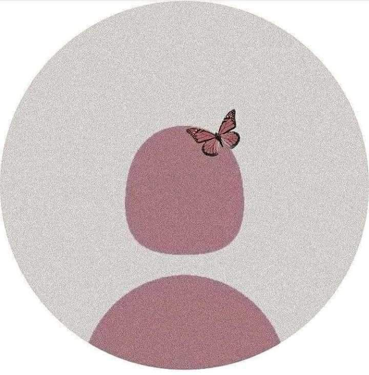

Sou Amanda Tavares Novais, estudante do 3º ano do ensino médio, com curso de Informática integrado. Sou uma pessoa responsável e empática. Tenho facilidade para aprender rápido e sou organizada. No meu tempo livre, gosto de ler, assistir séries e filmes, ouvir música e aprender coisas novas. Pretendo cursar Direito no futuro, buscando crescer profissionalmente e adquirir novas experiências.”